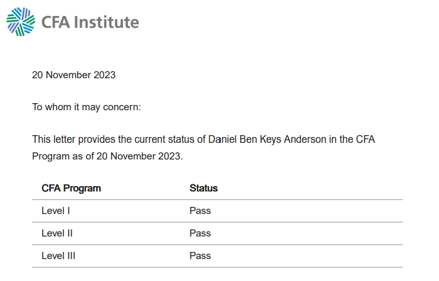

DANIEL ANDERSON
Professional Portfolio
Professional Portfolio
Hi, I'm Daniel, a 30-year-old from South Africa, now in Vietnam with my family. My journey spans various roles—from finance and market research in a bustling startup to remote business analysis after globetrotting with my wife, Emma. Post-travel, I delved into digital marketing and launched a machine learning venture. My diverse experience is underpinned by passing all 3 CFA levels and an internship in private equity before my current role in corporate advisory. I'm about to graduate from my MBA and looking for new opportunities.
Bsc. Property Studies and B.Comm Honors Degree in Financial Analysis & Portfolio Management from the University of Cape Town.
View DegreesAfter passing level 3 in August 2023, I require almost 2 more years of investment related work experience to be eligible to register as a Chartered Financial Analyst.
 View VerificationI am due to graduate in September 2024 from the Quantic School of Business and Technology.
My ClassMy diverse background in advisory, management consulting, machine learning, digital marketing, and entrepreneurship, combined with my education, draws me to areas where I believe I can be effective and add value:
I have experience with identifying targets, underwriting, and dealmaking. However, given my experience with other business functions & domains, project management and strategy, I can also take a hands-on approach for driving the growth of investments and managing a portfolio of companies.
Having an entrepreneurial background and experience working on programming projects, lead generation, providing outsourced CFO as a service, leadership, and experience with turnaround scenarios & pivots—I feel well equipped to own responsibility for a product and drive the growth of a start-up venture.
My education is largely centred around economics, finance—coupled with experience working on small scale investment banking projects, research, financial modelling and due diligience, and programming skills - I feel prepared to take on a variety roles in capital markets & investment management
Recent projects that highlight the skills and experience I've discussed:
The slides are from a feasibility study of a vertical integration by a pharmaceutical distributor and the dashboard comes from an Outsourced CFO client in the healthcare industry. I was the leader on both projects.
The financial model was used for a client in the healthcare industry to raise funding for an expansion and subsequent equity financing. The goal was to showcase the revenue generation potential of their expansion plan and ability to make debt repayments.
A client in the logistics industry needed to reduce transport costs and understand where to best place micro warehouses. We used a K-means clustering algorithm and the Google API to identify clusters of points of sale and select the optimal number of microwarehouses to achieve a delivery time KPI. I was the lead on the optimization.
Direct & Co-Founder, Dias Advisors
"I have worked with Daniel for close to 1 year. During this time he worked on a wide variety of projects, where he was responsible for delivering many outcomes, including but not limited to: valuations of private companies, structuring debt and equity transactions, building data analytics reports for operational enhancements, and transaction due diligence. He also added value to sales and marketing activities with his extensive knowledge of digital marketing activities. I have always found Daniel to be an extremely disciplined individual, who excels in a team environment and works hard to rally other members around working towards the big picture and operating with purpose."
CEO, Dias Advisors
"I had the privilege of working with Daniel at DIAS as a Senior Associate, where his expertise and leadership significantly boosted our team's efficiency. Daniel stands out for his strategic problem-solving and exceptional technical skills, especially in financial analysis. He is not only technically proficient but also a positive force, uplifting team morale with his enthusiastic approach. Daniel's mentorship of junior colleagues and his natural leadership qualities set him apart. His contribution to our projects showcased his ability to drive success. Daniel's blend of technical acumen and leadership would be a tremendous asset to any team. I highly recommend him."
Head of Market Research, GetSmarter (Now 2U)
"Dan joined my team earlier this year and immediately added value. He helped us set up alot of the processes and daily operational and data monitoring activities we focused on. Dan was always keen to learn more, but perhaps his greatest asset is his character and integrity. I would not hesitate to recommend Dan in whatever future roles he pursued."
Top